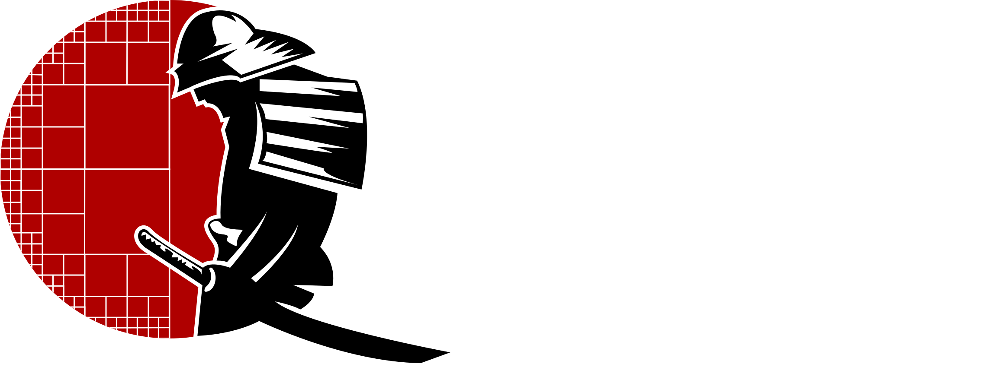
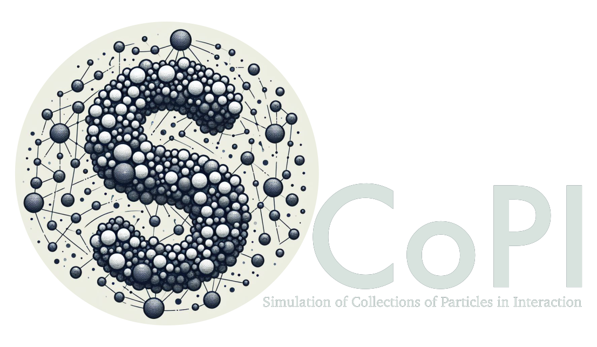

HPC@Maths
Loïc Gouarin, Marc Massot
January 30, 2026
Team composition
- 5 researchers
- 6 research engineers in scientific computing
- 3 post-docs
- 9 phd students
- Several external collaborators (~10)
Scientific topics
Computer assisted proof in PDEs
Maxime Breden, Matthieu Cadiot, Hugo Chu
- Existence of specific solutions (overall dynamics of the system - limit cycles / travelling waves…)
- Certification of the result of a numerical simulation
- Based on a fixed point argument in the vicinity of the approximate solution
- Numerical analysis and computations
emerging topics
- Navier-Stokes
- Cost reduction of proofs
- Bifurcations
- Connexions in parabolic PDEs
- Beyond Fourier Series standard tools
Computational linear algebra
Élise Fressart, Lucien Gontier, Loïc Gouarin, Pierre Matalon, Nicole Spillane
- Applied and computational linear algebra
- High-performance computing in the sense of massively parallel computing,
- Domain decomposition,
- Preconditioning,
- Krylov solvers (Conjugate gradient, GMRES, etc.),
- PDEs with stochastic coefficients
applications
- Solid Mechanics
- Development of code and libraries
Kinetic theory and moment methods
Remy Annunziata, Daniele Biasone, Vincent Giovangigli, Ward Haegeman, Josselin Massot, Marc Massot, Giuseppe Orlando, Teddy Pichard, Zoubaïr Tazzakati
- Derivation of fluid equation from kinetic theory
- Cohesive and Interfacial fluid derivation
- Multi-scale Chapman Enskog and Hilbert expansion
- Method of moments (Closure)
- Limits of approach and link with SAP
- Geometric Method of Moments
- Large phase space description - semi-kinetic method
applications
- Gas-surface interaction
- Two-phase flows
- Hybrid fluid-rarefied flows
- Plasma physics
- Countrail formation and pollution modelling
- Nuclear Engineering
New numerical schemes
Sébastien Dubois, Vincent Giovangigli, Loïc Gouarin, Alexandre Hoffmann, Josselin Massot, Marc Massot, Pierre Matalon, Teddy Pichard, Laurent Séries, Antoine Simon, Zoubaïr Tazzakati
- Dynamic spatial and temporal adaptation with error control (wavelet/splitting/ImEx)
- Code coupling - high-order multi-step
- DG methods and high-order wavelets
- Well-balanced / AP schemes / time-space approach
applications
- Combustion
- Lithium Battery
- Plasma physics
- Two-phase flows
- Biomedical Engineering
- Propulsion and reentry at high altitude
Variational approch (SAP)
Ward Haegeman, Marc Massot, Giuseppe Orlando
- Derivation of PDEs wihtout dissipation
- Extended Thermodynamics - Dissipation
- Analysis of mathematical properties
- Two-scale unified modeling - all topology model
- Link with microscopic - geometrical moments
- Lin constraint - Geometry
- Sources terms / Relaxation and numerical schemes
applications
- Two-phase flows
- Fluid Mechanics
- Nuclear Engineering
Lattice Boltzmann methods
Loïc Gouarin, Marc Massot
- Numerical Analysis of LB schemes
- Treatment of boundary conditions
- Dynamic mesh adaption with erroir control
- High order schemes
- Hyperbolic/parabolic scaling
applications
- Two-phase flows
- Fluid Mechanics
- Aerospace Engineering - Hypersonic flows
Turbulence, processes and particles
Clément Morhain, Marc Massot
- Low-regularity stochastic processes (Intermittency)
- Kinetic Simulation of Turbulence based on wavelets
- Numerical simulation based on OU processes
- Kinetic approach / FP / Moment methods
- Link with SPDEs in fluid mechanics
applications
- Two-phase flows
- Fluid Mechanics and Turbulence
- LES of two-way coupled particle-laden turbulence
Quantum computing
Sébastien Dubois, Élise Fressart, Loïc Gouarin, Nicole Spillane
- Quantum algorithm for PDE simulation
- Mesh adaptation and error control
- Linear Algebra
- FE programming with DOLFINx and PETSc (Python + MPI),
- Quantum computer emulation with Qiskit (Python).
applications
- ElectroMagnetism : Maxwell Equations
Emerging topics : SciML
Loïc Gouarin, Rémy Hosseinkhan, Marc Massot
- Simulation of high-dimensional PDEs
- Closure for moment methods
applications
- Plasma physics
- Two-phase flows
- Financial Engineering (collab.)
Technical skills
open source software
samurai
- C++ 20 header only
- Adaptive mesh refinement techniques
- New data structure: intervals + algebra of sets
- Finite volume and lattice Boltzmann methods
- MPI and GPU soon

ponio
- C++ 20 header only
- time integrators for solving differential equations
- A large collection of methods: eRK, DIRK, LRK, expRK, RKC, Lie or Strang splitting
- Highly flexible
open source software
pylbm
- Python
- lattice Boltzmann methods
- Analysis tools
- Sympy
- Source code generator
- MPI and GPU

SCoPI
- C++ code
- Simulation of interacting particle collections
- 2D and 3D simulations
- Convex regular shape
- Contact models: inelastic, with or without friction or viscous

open source software
GenEO
- linear elasticity
- Finite element
- GenEO algorithm
- Python
- New preconditioner implementation using petsc4py
- Fenics for matrix assembling
software engineering
- Version control
- Tests
- Documentation
- Packaging (conda, spack, guix)
- GitHub Actions
- AI agents (beginner)
Training
Hands-on samurai
Distribuer son application Python
Cadre de développement et automatisation pour l’open source
Scientific partnership
- CEA
- MdlS
- EDF
- ONERA
- TotalEnergies
- Thales
- Safran
- NASA
Technical partnership
- CEA
- QuantStack
- NVIDIA
Interactions
- Alexandre H., Philippe M. (HJB simulation with samurai)
- Sébastien I. (code-coupling / mesh adaptation / DG)
- GT Fixed-point resolution improvement (Visit Y. Saad 1st and 2nd of June)
- Kinetic theory and fluid equations (Flash Workshop next Monday)
- SAP : workshop before Ward’s defense (8th of June - defense 9th of June)
Thank you for your attention

séminaire HPC@Maths/Ananke  January 30, 2026
January 30, 2026